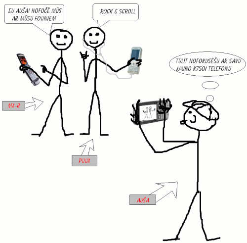

Riepa bez gaisa? Ko nu mels niekus?
 2006-05-17
2006-05-17
 08:47:42
08:47:42

Biju jau iepriekš pāris bildītes redzējis, kur tika rādītas Michelin jaunās riepas bez gaisa – Tweel. Beidzot ir iespēja to arī noskatīties iekš video!
Lasīt tālāk... komentāru navMāksla reloaded
Mx-r te šodien paziņoja par telefona maiņu, es nesen paziņoju par telefona maiņu un šodien Auša arī paziņoja par telefona maiņu. Tad nu manā prātā tapa kaut kas šāds:

Zīmola un zīmuļa maiņa
Šodien internetā parādījās pirmās iespējamās nākamā Sony Alpha fotoaparāta bildes. Izskats neko daudz neatšķiras no KonicaMinolta 5D. Jāgaida vasara, kad ir plānots izlaist jaunu DSLR līniju ar uzrakstu Sony uz produktiem. Laikam būs jākļūst par Sony fanu :)
Kas attiecas uz zīmuļa maiņu, tad…
Lasīt tālāk... četri komentāriŠodiena vēsturē (updated)
Pirmkārt: TM meklē jaunu dzīves vietu
Otrkārt: ...
Lasīt tālāk... pieci komentāriŠaibu! Šaibu! (updated)
Nu ko.. Hokejs sākas? Protams, ka sākas!
Tad jau lai mūsējiem labi sokas, u.t.t. Es arī ņemšu savu nesen caur melniem ceļiem iegūto Latvijas karoga krāsās tonēto šalli un vēl savu hokejista uniformai līdzīgo džemperi, un iešu ielās! Šodien jau pusdienojot sajutos dīvaini, kad ielu troksni pārspēja blakus esošie briti. Iespējams, ka uz hokeju atbraukuši. Šie bļaustījās uz nebēdu. Bet tas jau nekas – galvenais, lai ekonomika plaukst (viņi bija izdzēruši daudz dārgos alus).
Vakar vēl atklāju vasaras sezonu “skrienot” orientēšanās sacensībās pa mežu. Bija jauki ievilkt plaušās svaigo gaisu, tik viss pārējais ķermenis negribēja nekur steigties un pēc pirmajiem diviem punktiem skriešanas mehānisms atteica. Bet ar to jau sportiskā diena nebija galā. Protams, bija no garāžas jāizvelk ārā savs pusgadu nostāvējušais divritenis, lai veiktu 20km garu distanci pa Valmieras apkārtni. Cerams, ka ar to viss nebeigsies.
mx-r laikam mācās klusēt un tādēļ no viņa nekas jauns pēdējā laikā nav nācis.
Un nobeigumā viens skaists likums (angļu mēlē):
No matter where you go, there you are.
Update@18:52:
Tikko izlasīju par vienu dzelzi, par kuru mx-r bija stāvā sajūsmā – Matrox TripleHead2Go. Ideja vienkārša: pievienojam kastīti datoram, pievienojam kastītei trīs monitorus un spēlējam spēles, vai darbojamies ar visu ko citu izšķirtspējā 3840×1024 uz visiem trim monitoriem. Bet viss tomēr nav tik spīdoši, jo ATi kartes pilnībā neatbalsta šo brīnumu, ļaujot pilnā izšķirtspējā spēlēt tikai Solitaire, u.c. desktop spēles, jo nav iespējams uz ATi kartēm palaist 3D spēles :’(
 Iepriekšējie raksti
Iepriekšējie raksti